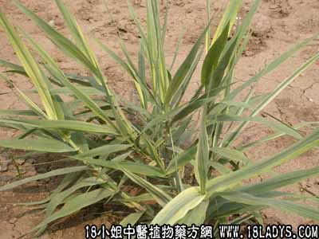

别名：白毛根。
植物名：白茅。
生长环境：本品为多年生草本，生于草原山坡上向阳第。
分布：广布于温带和热带，我国各省均有。
入药部分：根。
采集期：全年采根、夏季采花。
自采地点：郊野山岗。
功能：清肝肺热。
主治、用量和用法：1、咳血、衄血、吐血，配伍用；2、筋络湿火痛，配伍用；3、黄汗：干用2至3两，猪瘦肉适量，清水煎服，连服数剂。
验方1：（治咳血、吐血、衄血方）生茅根4两、生莲藕2两、生雪梨2两、生第1两、生扁柏1两、擂烂取汁，炖一小时服。
（方解）茅根、藕、梨益脾养阴清热；生第泻心肾火；扁柏长于止血，为甘润凉血之剂。凡痨伤出血，胃热妄行，肺热鼻衄等出血症，皆能损明。本方清中有补，补而不燥，其法治善。
（方歌）咳血吐衄生茅根，生藕生梨生斟，擂烂取汁炖之服，清热养阴法堪珍。
验方2：（治湿火筋络痛方）白茅根4两、枸杞头3两、老桑枝2两、丝瓜络5钱，清水六碗，煎成两碗，分两次服。
（方解）方中以白茅根清肝热为君，老桑枝利关节为臣，枸杞头去三焦之火为佐，丝瓜络通血脉、走筋络为使。合为治疗湿盛化气、筋络作痛之有效方剂。
（方歌）湿火为患筋络疼，清肝泄热白茅根，桑枝为臣枸杞佐，丝瓜通络效如神。
本文解释权归中药大全，本文地址：https://www.daquan.com/post/1621.html